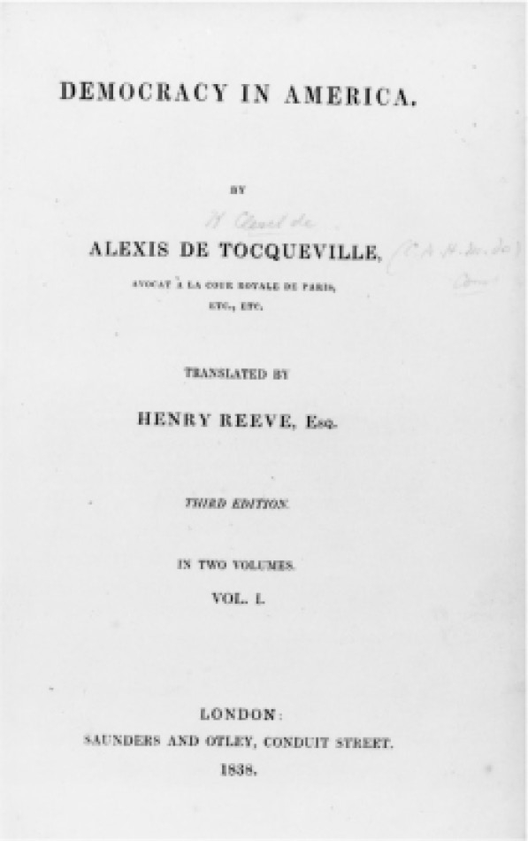

（托克维尔，《论美国的民主》）
约翰·斯图尔特·密尔在《自传》（1873）中讲道，正是阅读托克维尔，开启了“我在《代议制政府》中，把政治理想从虔诚信徒眼中的纯粹民主转变为加以修正的民主”。密尔断言，原因在于托克维尔对于“民主的优越性”给出了更有说服力的描述：在承认民主必然到来的同时，托克维尔指出了平民政府“特有的弱点”，并表明该如何补救。他说最重要的是，托克维尔努力保护民主，不让它“退化成那种独一无二的专制，在现代社会中它存在着真正的危险，即行政首脑对孤立个体构成的集合实施绝对统治，全体平等但一律为奴”。这种状态可能来自日益加剧的集权化。密尔从托克维尔那里看到，居于国家和个人之间的所有那些制度，在维持自由和民主之间的平衡方面极为重要。密尔已经看到，在英国有利的改革频频受挫，“因为伪装而成的地方政府怀有……不合理的偏见，往往不过是打零工的地方寡头出于私心的管理不善”，现在他又认为这些地方偏见在一定程度上保护着一个完全集权的国家，因而是支持对地方政府加以改革而不是肢解的理由［万变不离其宗（plus ca change, plus c’est la même chose）］。托克维尔在那部两卷本巨著中对美国社会的论述，不论是否完全准确，其结论都极大影响着欧洲人和美国人对未来的看法，他的许多观点今天仍有重要意义。托克维尔完全称不上是当代的亚里士多德，但他的严肃态度和得出的结论，与密尔的那些结论一样，值得特别关注。
亚历克西·德·托克维尔（1805—1859），政治观点自由而个人气质保守，出生于诺曼底的贵族家庭，却试图通过撰写的所有著作和担任的公职说服贵族同胞接受大革命的遗产，让他们相信时光不会倒流。他们必须承认，日益扩大的平等是不可避免的，需要研究的是在平等的时代如何维护自由。托克维尔所说的“平等”，指的是实际的政治平等和日益平等的条件，即他在美国发现的民主的“风尚”（manners）或行为方式，而不是经济上的平等。他对极端的经济不平等的危险关注得太少了，仅仅认为商业和市场之间关联的强化标志着贵族气质的终结，而资产阶级伦理本质上是温和而审慎的，不利于寡头制——不过，亚里士多德的幽灵可能曾在他的耳边嘀咕着“富豪制？”。尽管如此，他却是民主条件的第一位深刻、系统的分析家，无论这种条件多么难以实现。一个同时代的人称他“像虔诚的埃涅阿斯，已经着手创建罗马却还在为被遗弃的狄多哭泣”（维吉尔），内心坚定但眼泪未歇。
1831年，受法国政府之托，托克维尔和朋友居斯塔夫·德·博蒙一起访问美国，想撰写关于改革后的监狱系统的报告。此行的成果不仅有1832年发表的一份报告，还包括托克维尔的两卷本巨著《论美国的民主》（先后出版于1835和1840年）。去美国之前，他心里已经有了大概的想法，这种想法事实上也是启程的主要原因：“坦白地说，在美国我看到的不仅是美国。我在那里探寻民主本身的形象，以便了解我们对其进步不得不怀有的恐惧或希望。”此外，他那部同样影响广泛、酝酿已久的作品，即《旧制度与大革命》（1856）一书的核心主题和假设也在成形。这两部作品同属于一项宏伟计划，即确定法国旧的贵族制度如何走向崩溃，说服人们相信民主（他指的是条件的平等）无法避免，并通过研究在这些倾向走得最远的美国民主如何实际运行，在一定程度上以比较的方式遥望欧洲的未来，从而知晓如何直面法国大革命的未竟之功来保障欧洲的自由。他在上卷结束时预言，不久之后世界将由两个人口众多、幅员辽阔、代表着不同原则的国家主导，即美国和俄国。上卷的最后一句话一度流传广泛：“当今诸国无法阻止人类状况向着平等迈进，但是平等的原则把他们引向奴役或是自由、知识或是野蛮、繁荣或是不幸，则要看人类自己。”

图7 托克维尔代表作首部英文版的扉页